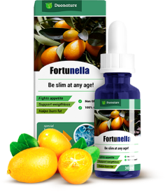

Что такое капли Fortunella?

Это не просто безвредная пищевая добавка – это биологический активатор. Сегодня, это единственное эффективное средство в борьбе с лишним весом.
Ведущий эндокринолог Германии рассказал, почему в этом году УВОЛЯТ ВСЕХ ДИЕТОЛОГОВ. Эксклюзив из первых уст

Генри Фишер– заведующий отделением клеточной биофизики в НИИ Общества Макса Планка (MPG). Эндокринолог, консультант Всемирной Организации Здравоохранения по вопросам диетологии.
Диеты и синтетические средства для похудения УБИВАЮТ ВАШЕ ЗДОРОВЬЕ! Они могут дать временный эффект, но после возвращения к привычному образу жизни – вы снова потолстеете. Пара месяцев стройного тела не стоят того, чтобы сократить свою жизнь на 5 или 10 лет. К счастью, у современной диетологии появилось решение.
В прошлом году Америка занимала первое место по числу людей с лишними килограммами, но сегодня в США почти не осталось людей с избыточным весом. Как такое возможно?
Они сделали прорыв в диетологии, который изменит весь мир – научились создавать экстракт из плодов фортунеллы. Это фрукт из Южной Азии, который уничтожает жировые клетки и существенно увеличивает скорость обмена веществ. Проблема в том, что после созревания он портится буквально за несколько дней.
Нужно было найти консервант, способный сохранить столь редкие свойства фортунеллы. И им стала органическая хлорогеновая кислота, которая содержится в зелёном кофе. Благодаря ей удалось создать капли Fortunella – первый в мире экстракт плодов фортунеллы, который стимулирует естественную потерю веса и увеличивает скорость метаболизма на 307%.
Подумайте только – за одну неделю можно терять по 5 кг лишнего веса, попутно очищая организм от шлаков. Поэтому в США от ожирения избавляются быстрей, чем от простуды.
Это не просто безвредная пищевая добавка – это биологический активатор. Сегодня, это единственное эффективное средство в борьбе с лишним весом.
Наше тело – совершенный механизм, созданный природой. Когда мы болеем – организму не хватает витамина C. Когда ломаем кости – он просит витамин D и Кальций. Что же мы делаем, когда хотим похудеть? Мучаем себя диетой, КОТОРАЯ ТОЛЬКО ВРЕДИТ ОРГАНИЗМУ! Тело может самостоятельно справиться с накоплением лишних килограммов – ему лишь надо дать те микроэлементы, которые способны расщепить жир и превратить его в энергию. Именно они и содержатся в плодах фортунеллы.
Капли Fortunella – это экстракт, который помимо зелёного кофе, гуараны и зелёного чая, содержит L-карнитин, бромелаин и Co Q-10. Это идеальный коктейль для борьбы с жиром! Он тает буквально на глазах.
Неделя 1(вывод воды)
Неделя 2(очищение от шлаков)
Неделя 3(активация липолиза)
Неделя 4(выравнивание метаболизма)
Неделя 5(сжигание висцерального жира)
Неделя 6(закрепление веса)
недели
Килограмм сброшеноНеделя 1(вывод воды)
Неделя 2(очищение от шлаков)
Неделя 3(активация липолиза)
Неделя 4(выравнивание метаболизма)
Неделя 5(сжигание висцерального жира)
Неделя 6(закрепление веса)
Чтобы увеличить эффективность похудения – принимайте капли Fortunella за 20 минут до приёма пищи.
Это единственное средство, которое способно убрать жир с «проблемных» зон: рук в области трицепса, шеи, бёдер, а также отложения в области лопаток.
В испытании приняло участие 100 женщин с лишним весом, в возрасте от 30 до 72 лет. Участницы не меняли привычный образ жизни и свой рацион, принимали средство в домашних условиях. Результат удивил всё медицинское сообщество:
Сэкономьте 100 евро на посещении диетолога. Мы разработали для вас онлайн-калькулятор, который составит точный расчёт терапевтического жиросжигающего курса с учётом ваших параметров. Воспользуйтесь им прямо сейчас (это бесплатно).

Ваш вес в пределах нормы. Чтобы поддерживать форму без диет – принимайте капли Fortunella один раз в неделю.
У вас не более 9 кг лишнего веса. Принимайте капли Fortunella в течение двух недель.
У вас более 18 лишних килограммов, что соответствует второй стадии ожирения. Пройдите курс с каплями Fortunella в течение 3 недель.
У вас последняя стадия ожирения. НУЖНЫ СРОЧНЫЕ МЕРЫ: принимайте капли Fortunella курсом от 10 до 14 недель. За это время можно сбросить от 22 до 47 килограммов.
Совет редакции: приём капель Fortunella на голодный желудок подавляет чувство голода, поэтому вы наедитесь и половиной привычной порции.
Оставьте адрес электронной почты, и наш диетолог разработает для вас персональный план похудения с рационом питания. Это совершенно бесплатно и конфиденциально, вы получите письмо в течение часа.
Это сильнейший прорыв не только в диетологии, но и в мировой медицине. Урсула Гавер, нутрициолог медицинского центра «FitLife», Австрия
Возмутительно, что капли Фортунелла не продаются в аптеках. В США их можно купить в обычном супермаркете. Пришло время побороть ожирение раз и навсегда. Урсула Шульц, писатель, заслуженный диетолог, Германия

Я предлагаю всех диетологов, которые не рекомендуют своим пациентам капли Fortunella, привлечь к уголовной ответственности за халатность! Глупо предлагать другие средства, когда есть такое решение. Мария Труханова, ведущая программы «Женское здоровье» на канале RTR, Россия
Доказано, что август – лучшее время для начала курса похудения с каплями Fortunella. Благодаря изменениям средней температуры и ускорению обмена веществ, эффект от приёма вырастает на 43%.
Остерегайтесь подделок! Капли Фортунелла продаются лишь одним производителем. И до включительно вы можете принять участие в беспроигрышной акции, где можно выиграть скидку до 50%!


Здравствуйте. Подскажите, можно ли пить капли, если у меня проблемы с жкт?
Ответить
Здравствуйте, Анастасия. Капли Fortunella , нормализуют не только работу жкт, но и всех систем организма. Принимайте капли по инструкции, и не превышайте дозировку. Удачи!
Ответить

Я уже давно не верю в обещания “минус 20 кг за месяц”, ну не бывает такого. Пила эти капли, за месяц похудела всего на 4 килограмма, но с таким же успехом можно и на диете посидеть.
Ответить

Если честно, то только первые пару дней, потом вышла на работу, и там уже как получится.
Ответить
Ирина, очень важно придерживаться инструкции, попробуйте ещё раз, не пропускайте прием и не превышайте дозировку, эффект капель накопительный, поэтому не бросайте, если в первое время вы не увидите резкого снижения веса.
Ответить
Я последовала вашему совету, и действительно, первое время вес уходил медленнее чем я рассчитывала, но спустя 2 недели на весах - 11,5 килограмм. Спасибо вам большое!
Ответить
Я похудела на 34 килограмма с каплями Fortunella!!! Выгляжу сногсшибательно. А самое главное, что вес не возвращается. Я советую всем это средство.
Ответить
Я худею с каплями Fortunella, с 78 килограмм. И за первую неделю ушло 4,5 килограмма, в основном вода и шлаки. За вторую неделю ушло еще 7,5 килограмм, но это уже был исключительно жир! (у меня весы с анализатором состава тела, так что я контролировала буквально все изменения). Сейчас мой вес составляет 55 килограмм, и это всего за полтора месяца!
Ответить

Я столько слышала положительных отзывов об этом средстве, что решила заказать, нашла сайт в интернете и заказала курс. В итоге, доставляли две недели, никакой инструкции не было, сайт где я заказывала перестал работать. На вкус гадость какая то, эффекта никакого, пила неделю и начались проблемы с жкт, конечно бросила. Не советую никому.
Ответить
Александра, здравствуйте. Вы купили подделку. Капли Fortunella в нашей стране продаются лишь одним производителем, его сайт указан выше. В каждой упаковке есть инструкция, и конечно же никаких проблем со здоровьем капли не вызывают, а наоборот нормализуют работу всего организма. Закажите на официальном сайте, и вы увидите каких результатов можно добиться.
Ответить
Я так и поступила, заказала капли на сайте выше. Доставили через 2 дня после заказа прямо домой, инструкция прилагается, выглядят совершенно по другому, чем когда я заказывала в первый раз, упаковка очень качественная. По вкусу приятные, пью по инструкции уже 2 дня, никаких проблем не заметила. Девочки остерегайтесь подделок!!!
Ответить


Давно искала средство для похудения, а то я такая лентяйка, сама себя никогда в руки не возьму. Заказала, понравилась доступная цена и натуральный безвредный состав. Химией себя тоже травить не хочется. Пью, аппетит намного меньше стал, чувствую себя отлично - никаких побочных эффектов нет. На весах уже минус 6,5 килограмм, за 8 дней. Я очень довольна!
Ответить
Пью капли уже третью неделю - всего минус 3 килограмма. Я разочарована, надеялась на большее
Ответить


Это слишком маленькая суточная доза, поэтому и результат не тот. Пейте по чайной ложке 2 раза в день или по 15 капель 6 раз в день, и лучше всего за 20 минут до еды.
Ответить

Вы были правы, как только я изменила дозировку, вес пошёл вниз. За неделю минус 5,5 килограмм!!!
Ответить

После родов никак не могла похудеть, что я только не пробовала, и диеты и таблетки и голодала даже. Помогли только капли Fortunella, за месяц я похудела на 16, 5 килограмм и стала такой же как до родов. Девочки, не мучайте себя диетами, закажите капли и вы быстро похудеете, без вреда для здоровья. Посмотрите на меня)


172 комментария за сегодня
Капли Fortunella мне посоветовал диетолог. Сказала, что сейчас это самое лучшее средство и нет никакого вреда для здоровья. Пью уже третью неделю, результат минус 12,5 килограмм (изначальный вес был 84 кг). Для меня это хороший результат, так как до этого мне ничего не помогало. Надеюсь похудеть до заветных 52 кг))
ОтветитьЕлена, так держать и у вас всё получится!
ОтветитьДобрый день. Подскажите пожалуйста, при приеме капель надо соблюдать диеты или заниматься спортом?
ОтветитьЗдравствуйте, Полина. Соблюдать диету или увеличивать физическую активность при приеме капель не обязательно, но если вы уменьшите потребления сахара и жирного, то желаемого результата вы сможете добиться быстрее.
ОтветитьБольшое спасибо. А то я боюсь что не смогу отказаться от любимой еды, а похудеть очень хочется. Заказала курс, попробую.
ОтветитьЯ в восторге от этого средства. Я за 6 недель похудела на 23,5 килограмма!!! Не изнуряя себя ни диетами, ни спортом, только в самом начале немного уменьшила порцию, а уже буквально через три дня заметила, что аппетит снизился и мне не хочется объедаться на ночь. Оцените мои результаты)
Анна, вы выглядите шикарно!!!
Ответить